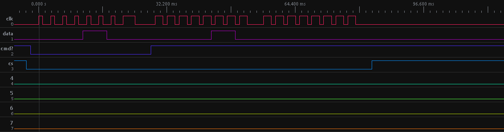
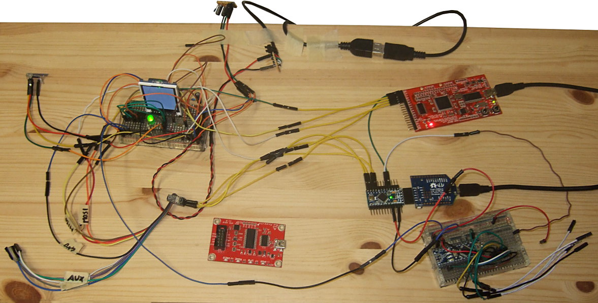

link (back) to github repo, where example code also resides
st7735r communication
afaik, protocol is not spi. it's one that's defined in the datasheet, and simplified here (dirty, and maybe incorrect):
-
ISCL = clock. tick tock!
-
ISDA = two-way data line. tristate when expecting to read, so driver can manipulate the voltage
-
DC = determines if the data being ticktocked onto data line is a command (low) or parameters/other data (high)
-
RES = reset. set to low and bring back up to have the hw in sane state
-
CS = set to low to communicate with the chip. set to high to make the driver deaf to clock
as for timings, you have to inspect the datasheet. arduino is slow enough (or at least slow enough with delay(1) in between everything) to communicate without errors
how?
#1) activate CS, #2) activate DC, #3) for each bit: set value to data line and tick & tock ISCL, #4) tristate data line, #5) deactivate DC, #6) for each expected bit: tick ISCL, read data line value, tock ISCL, #7) deactivate CS if no more communication with the driver is needed
note! reset was done before, and is not mentioned / visible in the image below
image (below) explanation
we issue "Read Display Pixel Format" (0x0c or 0b00001100) during 8 clock ticks (last one is longer because arduino goes through "if (i == 0 && expectread) {...") and we get 0b00000110 as result (cmd 0Ch doc says 0b110 = 18-bit/pixel), and as datasheet states at Reset Table -> Interface Pixel Color Format -> After Power On -> 6 (18-Bit/Pixel)

ps. remember to share gnd with all devices in question ;)
nothing to do with the useful info above, but i love sharing <3
